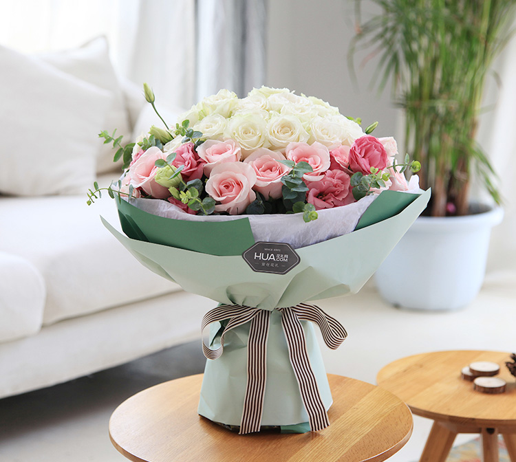

玫瑰
玫瑰花语在古希腊神话中，玫瑰集爱与美于一身，既是美神的化身，又溶进了爱神的血液。在世界范围内，玫瑰是用来表达爱情的通用语言。每到情人节，玫瑰更是身价倍增，是恋人、情侣之间的宠物。玫瑰代表爱情，不同颜色、朵数的玫瑰还另有吉意。玫瑰（红）：热情、热爱着您 我爱你、热恋，希望与你泛起激情的爱
玫瑰（蓝）：. 奇迹与不可能 实现的事。
玫瑰（粉红）：感动、暧昧之恋、不能诉诸于口的禁忌之情、铭记于心 、初恋，喜欢你那灿烂的笑容。
玫瑰（白）：天真、纯洁、尊敬、谦卑。我足以与你相配。
玫瑰（黄）：为爱道歉，享受和你在一起的日子。在日本，黄玫瑰是分手的代表礼物。在有些地方，黄玫瑰还代表着等待，等待属于你们的爱情。
